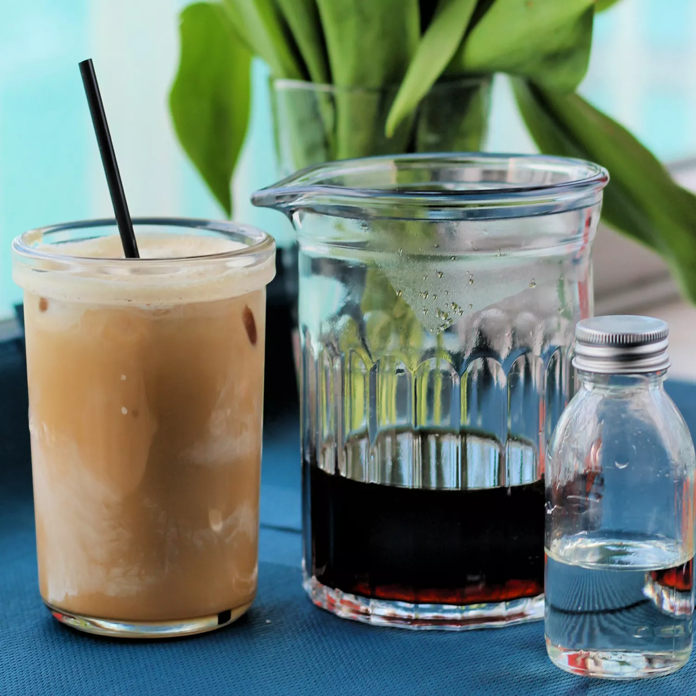

Cold coffee(Cold Brewed Coffee)
Ingredients
-
Cold Brew:
1 ¾ cups ground coffee
3 ½ cups water
-
Simple Syrup:
1 cup water
1 cup white sugar
-
For Serving:
3 fluid ounces water
ice cubes
Directions
- Step1: Pour coffee grounds of your choice into a pitcher. Pour in water and stir with a
spoon. Let mixture steep at room temperature for at least 12 hours and up to 24 hours.
- Step2: Line a fine-mesh strainer with a coffee filter and place over a medium bowl. Slowly
pour coffee mixture through the filter. Do not force it through. Discard grounds and rinse out
pitcher.
- Step3: Pour filtered coffee concentrate back into the clean pitcher. Place in the
refrigerator.
- Step4: Boil water and sugar together until sugar is completely dissolved. Cool simple syrup
and transfer to an airtight container. Store in the refrigerator for up to 2 weeks.
- Step5: Pour 3 ounces of coffee concentrate into a Mason jar or cup. Top with 3 ounces water.
Add desired amount of simple syrup and ice.